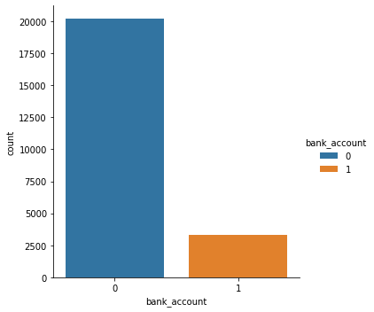
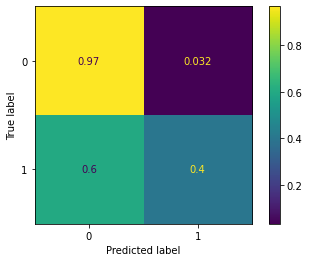

# dataframe and plotting
import pandas as pd
import numpy as np
import seaborn as sns
import matplotlib.pyplot as plt
# machine learning
from sklearn.model_selection import train_test_split
from sklearn.metrics import accuracy_score
import warnings
warnings.filterwarnings('ignore')Financial Inclusion in Africa
Prediction on whether individuals are likely to have bank accounts
This notebook covers: - Loading the data - Simple EDA and an example of feature enginnering - Data preprocessing and data wrangling - Creating a simple model - Making a submission - Some tips for improving your score
This notebook covers:
Loading the data
Simple EDA and an example of feature enginnering
Data preprocessing and data wrangling
Creating a simple model
Making a submission
Importing libraries
1. Load the dataset
# Load files into a pandas dataframe
train = pd.read_csv('Train.csv')
test = pd.read_csv('Test.csv')
ss = pd.read_csv('SampleSubmission.csv')
variables = pd.read_csv('VariableDefinitions.csv')# Let’s observe the shape of our datasets.
print('train data shape :', train.shape)
print('test data shape :', test.shape)train data shape : (23524, 13)
test data shape : (10086, 12)The above output shows the number of rows and columns for train and test dataset. We have 13 variables in the train dataset, 12 independent variables and 1 dependent variable. In the test dataset, we have 12 independent variables.
We can observe the first five rows from our data set by using the head() method from the pandas library.
# inspect train data
train.head()| country | year | uniqueid | bank_account | location_type | cellphone_access | household_size | age_of_respondent | gender_of_respondent | relationship_with_head | marital_status | education_level | job_type | |
|---|---|---|---|---|---|---|---|---|---|---|---|---|---|
| 0 | Kenya | 2018 | uniqueid_1 | Yes | Rural | Yes | 3 | 24 | Female | Spouse | Married/Living together | Secondary education | Self employed |
| 1 | Kenya | 2018 | uniqueid_2 | No | Rural | No | 5 | 70 | Female | Head of Household | Widowed | No formal education | Government Dependent |
| 2 | Kenya | 2018 | uniqueid_3 | Yes | Urban | Yes | 5 | 26 | Male | Other relative | Single/Never Married | Vocational/Specialised training | Self employed |
| 3 | Kenya | 2018 | uniqueid_4 | No | Rural | Yes | 5 | 34 | Female | Head of Household | Married/Living together | Primary education | Formally employed Private |
| 4 | Kenya | 2018 | uniqueid_5 | No | Urban | No | 8 | 26 | Male | Child | Single/Never Married | Primary education | Informally employed |
# Check for missing values
print('missing values:', train.isnull().sum())missing values: country 0
year 0
uniqueid 0
bank_account 0
location_type 0
cellphone_access 0
household_size 0
age_of_respondent 0
gender_of_respondent 0
relationship_with_head 0
marital_status 0
education_level 0
job_type 0
dtype: int64We don’t have missing data in our dataset.
# Explore Target distribution
sns.catplot(x="bank_account", kind="count", hue='bank_account', data=train);
It is important to understand the meaning of each feature so you can really understand the dataset. You can read the VariableDefinition.csv file to understand the meaning of each variable presented in the dataset.
The SampleSubmission.csv gives us an example of how our submission file should look. This file will contain the uniqueid column combined with the country name from the Test.csv file and the target we predict with our model. Once we have created this file, we will submit it to the competition page and obtain a position on the leaderboard.
# view the submission file
ss.head()| unique_id | bank_account | |
|---|---|---|
| 0 | uniqueid_1 x Kenya | 0 |
| 1 | uniqueid_2 x Kenya | 0 |
| 2 | uniqueid_3 x Kenya | 0 |
| 3 | uniqueid_4 x Kenya | 0 |
| 4 | uniqueid_5 x Kenya | 0 |
2. Understand the dataset
We can get more information about the features presented by using the info() method from pandas.
#show some information about the dataset
print(train.info())<class 'pandas.core.frame.DataFrame'>
RangeIndex: 23524 entries, 0 to 23523
Data columns (total 13 columns):
# Column Non-Null Count Dtype
--- ------ -------------- -----
0 country 23524 non-null object
1 year 23524 non-null int64
2 uniqueid 23524 non-null object
3 bank_account 23524 non-null object
4 location_type 23524 non-null object
5 cellphone_access 23524 non-null object
6 household_size 23524 non-null int64
7 age_of_respondent 23524 non-null int64
8 gender_of_respondent 23524 non-null object
9 relationship_with_head 23524 non-null object
10 marital_status 23524 non-null object
11 education_level 23524 non-null object
12 job_type 23524 non-null object
dtypes: int64(3), object(10)
memory usage: 2.3+ MB
NoneThe output shows the list of variables/features, sizes, if it contains missing values and data type for each variable. From the dataset, we don’t have any missing values and we have 3 features of integer data type and 10 features of the object data type.
If you want to learn how to handle missing data in your dataset, we recommend you read How to Handle Missing Data with Python by Jason Brownlee.
We won’t go further on understanding the dataset because Davis has already published an article about exploratory data analysis (EDA) with the financial Inclusion in Africa dataset. You can read and download the notebook for EDA in the link below.
Why you need to explore your data and how you can start
# Let's view the variables
variables| Variable Definitions | Unnamed: 1 | |
|---|---|---|
| 0 | country | Country interviewee is in. |
| 1 | year | Year survey was done in. |
| 2 | uniqueid | Unique identifier for each interviewee |
| 3 | location_type | Type of location: Rural, Urban |
| 4 | cellphone_access | If interviewee has access to a cellphone: Yes, No |
| 5 | household_size | Number of people living in one house |
| 6 | age_of_respondent | The age of the interviewee |
| 7 | gender_of_respondent | Gender of interviewee: Male, Female |
| 8 | relationship_with_head | The interviewee’s relationship with the head o... |
| 9 | marital_status | The martial status of the interviewee: Married... |
| 10 | education_level | Highest level of education: No formal educatio... |
| 11 | job_type | Type of job interviewee has: Farming and Fishi... |
3. Data preparation for machine learning
Before you train the model for prediction, you need to perform data cleaning and preprocessing. This is a very important step; your model will not perform well without these steps.
![]()
The first step is to separate the independent variables and target(bank_account) from the train data. Then transform the target values from the object data type into numerical by using LabelEncoder.
#import preprocessing module
from sklearn.preprocessing import LabelEncoder
from sklearn.preprocessing import MinMaxScaler
# Cobvert target label to numerical Data
le = LabelEncoder()
train['bank_account'] = le.fit_transform(train['bank_account'])
#Separate training features from target
X_train = train.drop(['bank_account'], axis=1)
y_train = train['bank_account']
print(y_train)0 1
1 0
2 1
3 0
4 0
..
23519 0
23520 0
23521 0
23522 0
23523 0
Name: bank_account, Length: 23524, dtype: int32The target values have been transformed into numerical datatypes, 1 represents ‘Yes’ and 0 represents ‘No’.
We have created a simple preprocessing function to:
- Handle conversion of data types
- Convert categorical features to numerical features by using One-hot Encoder and Label Encoder
- Drop uniqueid variable
- Perform feature scaling.
The processing function will be used for both train and test independent variables.
# function to preprocess our data from train models
def preprocessing_data(data):
# Convert the following numerical labels from interger to float
float_array = data[["household_size", "age_of_respondent", "year"]].values.astype(float)
# categorical features to be onverted to One Hot Encoding
categ = ["relationship_with_head",
"marital_status",
"education_level",
"job_type",
"country"]
# One Hot Encoding conversion
data = pd.get_dummies(data, prefix_sep="_", columns=categ)
# Label Encoder conversion
data["location_type"] = le.fit_transform(data["location_type"])
data["cellphone_access"] = le.fit_transform(data["cellphone_access"])
data["gender_of_respondent"] = le.fit_transform(data["gender_of_respondent"])
# drop uniquid column
data = data.drop(["uniqueid"], axis=1)
# scale our data into range of 0 and 1
scaler = MinMaxScaler(feature_range=(0, 1))
data = scaler.fit_transform(data)
return data Preprocess both train and test dataset.
# preprocess the train data
processed_train = preprocessing_data(X_train)
processed_test = preprocessing_data(test)Observe the first row in the train data.
# the first train row
print(processed_train[:1])[[1. 0. 1. 0.1 0.0952381 0. 0.
0. 0. 0. 0. 1. 0. 0.
1. 0. 0. 0. 0. 0. 1.
0. 0. 0. 0. 0. 0. 0.
0. 0. 0. 0. 1. 1. 0.
0. 0. ]]Observe the shape of the train data.
# shape of the processed train set
print(processed_train.shape)(23524, 37)Now we have more independent variables than before (37 variables). This doesn’t mean all these variables are important to train our model. You need to select only important features that can increase the performance of the model. But we will not apply any feature selection technique in this article; if you want to learn and know more about feature selection techniques, we recommend you read the following articles:
4. Model Building and Experiments
A portion of the train data set will be used to evaluate our models and find the best one that performs well before using it in the test dataset.
# Split train_data
from sklearn.model_selection import train_test_split
X_Train, X_Val, y_Train, y_val = train_test_split(processed_train, y_train, stratify = y_train,
test_size = 0.1, random_state=42)Only 10% of the train dataset will be used for evaluating the models. The parameter stratify = y_train will ensure an equal balance of values from both classes (‘yes’ and ‘no’) for both train and validation set.
There are many models to choose from such as
We will be using XGBoost.
We will start by training these models using the train set after splitting our train dataset.
#import classifier algorithm here
from xgboost import XGBClassifier
# create models
xg_model = XGBClassifier()
#fitting the models
xg_model.fit(X_Train,y_Train)XGBClassifier(base_score=None, booster=None, callbacks=None,
colsample_bylevel=None, colsample_bynode=None,
colsample_bytree=None, device=None, early_stopping_rounds=None,
enable_categorical=False, eval_metric=None, feature_types=None,
gamma=None, grow_policy=None, importance_type=None,
interaction_constraints=None, learning_rate=None, max_bin=None,
max_cat_threshold=None, max_cat_to_onehot=None,
max_delta_step=None, max_depth=None, max_leaves=None,
min_child_weight=None, missing=nan, monotone_constraints=None,
multi_strategy=None, n_estimators=None, n_jobs=None,
num_parallel_tree=None, random_state=None, ...)In a Jupyter environment, please rerun this cell to show the HTML representation or trust the notebook. On GitHub, the HTML representation is unable to render, please try loading this page with nbviewer.org.
XGBClassifier(base_score=None, booster=None, callbacks=None,
colsample_bylevel=None, colsample_bynode=None,
colsample_bytree=None, device=None, early_stopping_rounds=None,
enable_categorical=False, eval_metric=None, feature_types=None,
gamma=None, grow_policy=None, importance_type=None,
interaction_constraints=None, learning_rate=None, max_bin=None,
max_cat_threshold=None, max_cat_to_onehot=None,
max_delta_step=None, max_depth=None, max_leaves=None,
min_child_weight=None, missing=nan, monotone_constraints=None,
multi_strategy=None, n_estimators=None, n_jobs=None,
num_parallel_tree=None, random_state=None, ...)The evaluation metric for this challenge will be the percentage of survey respondents for whom you predict the binary ‘bank account’ classification incorrectly.
This means the lower the incorrect percentage we get, the better the model performance.
# import evaluation metrics
from sklearn.metrics import confusion_matrix, accuracy_score
# evaluate the model
xg_y_model = xg_model.predict(X_Val)
# Get error rate
print("Error rate of XGB classifier: ", 1 - accuracy_score(y_val, xg_y_model))Error rate of XGB classifier: 0.11177220569485757Let’s check the confusion matrix for XGB model.
from sklearn.metrics import confusion_matrix, ConfusionMatrixDisplay
# Get confusion matrix for Gradient Boosting Classifier
cm = confusion_matrix(y_val, xg_y_model, normalize='true')
# Display the confusion matrix
disp = ConfusionMatrixDisplay(confusion_matrix=cm)
disp.plot()
Our XGBoost model performs well on predicting class 0 and performs poorly on predicting class 1, it may be caused by the imbalance of data provided(the target variable has more ‘No’ values than ‘Yes’ values). You can learn the best way to deal with imbalanced data here.
One way to increase the model performance is by applying the Grid search method as an approach to parameter tuning that will methodically build and evaluate a model for each combination of algorithm parameters specified in a grid. You can skip this cell if you would like.
# Import GridSearchCV
from sklearn.model_selection import GridSearchCV
# Optimize model parameters
# I run this code in google colab to make the execution much faster and use the best params in the next code
param_grid = {'min_child_weighth': [1, 5, 10],
'gamma': [0.5, 1],
'subsample': [0.6, 0.8, 1.0],
'max_depth': [3, 5]
}
my_xgb_model = GridSearchCV(xg_model, param_grid,n_jobs=-1,verbose=2,cv=5)
my_xgb_model.fit(X_Train, y_Train)
print(my_xgb_model.best_params_) Fitting 5 folds for each of 36 candidates, totalling 180 fits
{'gamma': 1, 'max_depth': 3, 'min_child_weighth': 1, 'subsample': 0.8}The above source code will evaluate which parameter values for min_child_weight, gamma, subsample and max_depth will give us better performance.
Let’s use these parameter values and see if the XGB model performance will increase.
from sklearn.metrics import confusion_matrix, accuracy_score
# fit by setting best parameters and Evaluate model
xgb_model = XGBClassifier(min_child_weight=1, gamma=1, subsample=0.8, max_depth=5)
xgb_model.fit(X_Train, y_Train)
y_pred = xgb_model.predict(X_Val)
# Get error rate
print("XGB classifier Accuracy: ", accuracy_score(y_val, y_pred)*100)XGB classifier Accuracy: 88.82277943051425Our XGB model has improved from the previous performance of 0.110 to 0.108.
5. Making the first submission
After improving the XGBoost model performance, let’s now see how the model performs on the competition test data set provided and how we rank on the competition leaderboard.
First, we make predictions on the competition test data set.
# Get the predicted result for the test Data
test.bank_account = xgb_model.predict(processed_test)Then we create a submission file according to the instruction provided in the SubmissionFile.csv.
# Create submission DataFrame
submission = pd.DataFrame({"uniqueid": test["uniqueid"] + " x " + test["country"],
"bank_account": test.bank_account})Let’s observe the sample results from our submission DataFrame.
#show the five sample
submission.sample(5)| uniqueid | bank_account | |
|---|---|---|
| 3323 | uniqueid_9458 x Rwanda | 0 |
| 9543 | uniqueid_2460 x Uganda | 0 |
| 2404 | uniqueid_8473 x Kenya | 0 |
| 3877 | uniqueid_10012 x Rwanda | 1 |
| 5207 | uniqueid_11342 x Rwanda | 0 |
Save results in the CSV file.
# Create submission csv file csv file
submission.to_csv('first_submission.csv', index = False)